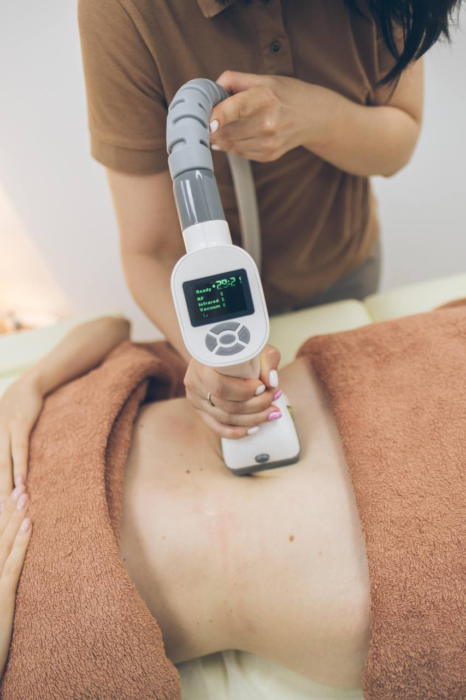
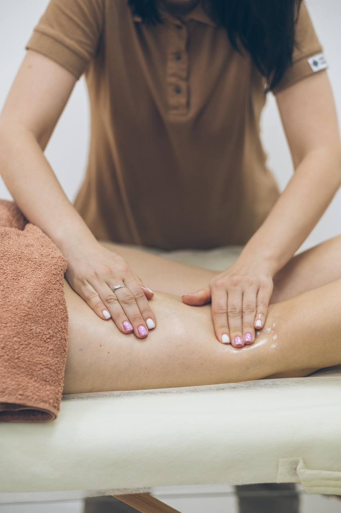

Відчуй
красу свого тіла
Про мене
Вітаю!
Я Катерина масажист класичного та апаратного масажу.
Як масажист класичного масажу - я використовую руки для здійснення різноманітних технік масажу, спрямованих на поліпшення кровообігу, зняття напруги м'язів, підвищення гнучкості та зниження стресу.
Як масажист апаратного масажу, я використовую вакуумно-роликовий апарат з такими помічниками як рф та кавітація. Апарат Zemits Bionexis Lite здійснює: вакуумний вплив, механічний роликовий масаж, RF-ліфтинг з енергією інфрачервоного випромінювання та кавітацію.
Обладнання
АZemits Bionexis Lite - це не тільки процедура класичного вакуумно-щипкового впливу на шкірні та м'язові тканини, а ціла SMART- система моделювання тіла, яка забезпечує досягнення відразу кількох цілей: підвищення пружності шкіри, спалювання жирових відкладень, зміцнення судинної стінки, тонізація м'язів. Переваги Zemits Bionexis Lite: безпека (мінімальний ризик побічних ефектів); безболісність; ефективність видно відразу після першої процедури; стійкість результату (до 12 місяців за умови дотримання здорового способу життя); універсальність (немає обмежень за віком і статтю, можна проводити на будь-якій ділянці обличчя і тіла, підходить для будь-якого типу шкіри, немає сезонності); немає обмежень площі впливу (для вакуумних насадок); відсутність реабілітаційного періоду; спеціальна ручка маніпули розроблений фахівцями. Незалежно від того в якому місці ви проводите ці процедури - це однаково легко. Вплив декількох методик одночасно!
Під час процедури радіохвильового ліфтингу вакуумні ролики захоплюють шкірний валик, обробляють його з обох сторін різною швидкістю та напрямками. Завдяки вакууму відбувається розслаблення м'язів, покращується кровообіг та отримання тканинами поживних речовин, а також руйнуються жирові клітини. Результат - еластична шкіра, підвищений тонус та внутрішня регенерація. Також використовується інфрачервоне випромінювання для підтримки цих ефектів та прискорення біохімічних процесів в тканинах, аби досягти більш щільної та сяючої шкіри.Zemits Bionexis Lite - це ефективна система для зменшення об’ємів тіла і целюліту, особливо успішна в використанні після пологів або ліпосакції. Поява целюліту викликана лімфостазом. Проміжна рідина здавлює судини, внаслідок чого порушується кровообіг, зменшується потік кисню, сповільнюється метаболізм клітин, підвищується рівень токсинів в органах, з'являється целюліт. Протипоказання: при хронічних захворюваннях органів на стадії загострення, злоякісних і доброякісних пухлинах, періоді виношування дитини, годуванні груддю, післяопераційному періоді «кесарів розтин», гострому тромбофлебіті, серцево-судинних захворюваннях, захворюваннях нервової системи, психічних захворюваннях, шкірних захворюваннях, захворюванні щитовидної залози та деяких інших випадках.
Процедури
- 
Апаратний масаж
Це не тільки процедура класичного вакуумно-щипкового впливу на шкірні та м'язові тканини, а ціла SMART- система моделювання тіла, яка забезпечує досягнення відразу кількох цілей: підвищення пружності шкіри, спалювання жирових відкладень, зміцнення судинної стінки, тонізація м'язів.
- 
Класичний масаж
Зменшує біль і запалення, сприяє розслабленню, сприяє травленню, стимулює кровоносну систему, підвищує імунітет, допомагає регулювати дихальну систему, сприяє регенерації шкіри.
Залиште свої дані, я Вам перетелефоную!